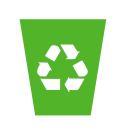

Contaminación
Contaminación
Hacer el cambio
!Nosotros podemos hacer el cambio!


La presencia de CO2 en la atmósfera provoca la emisión de concentraciones excesivas que aumentan las posibilidades de aparición del efecto invernadero. Además de las alteraciones que provoca en el clima con los fenómenos metereológicos, es también capaz de impedir la siembra en secciones del suelo donde residen agentes contaminados.

1. Ahorra energía en la casa. Apaga las luces, los ventiladores, los televisores y otros electrodomésticos cuando no los estés usando.
2. Cuida tu auto. Lleva tu auto al mecánico para que le hagan un adecuado mantenimiento en el momento que lo requiera.
3. Recicla. Reutiliza papeles, cartones, cajas, envases de vidrio, etc., para reducir la cantidad de residuos.
4. Cambia tus hábitos de compra. Prepara tus alimentos en vez de comprar comida empaquetada. Compra productos locales y de temporada.
5. Camina y anda en bici. Cuando puedas, camina y pedalea.


 2
2 3
3